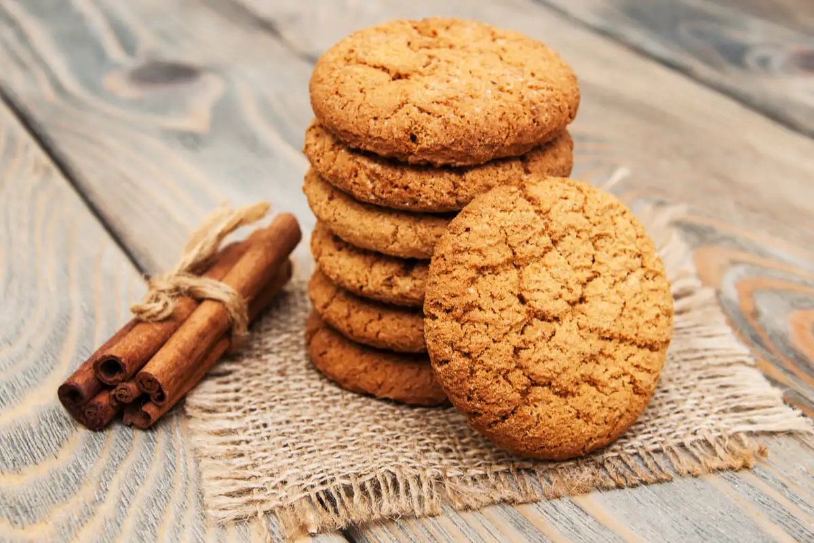

Cinnamon cookies

Description
I came up with this recipe when I was staying on a relative house on France.
I was jobless, bored and hungry, so I made this recipe following a recipe book,
but tweaking it a little since i didn't had all the ingredients.
Ingredients
- Butter: 125gr
- Powdered cinnamon: A tea spoon
- Sugar: 150gr
- Flour: 200gr
- Eggs: 1
Steps
- Preheat the oven to 180ºC
- Mix the butter with the sugar until it's creamy
- Add the egg and mix it well
- Add the flour and the cinnamon and mix it well
- Make small balls with the dough and put them on a baking tray
- Bake for 10 - 15 minutes
Voila! Enjoy your cookies!
Back to menu